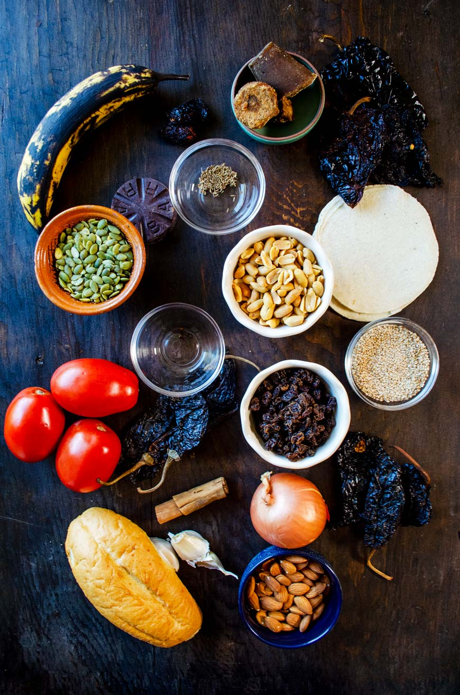

¿Cómo preparar mole con pollo?
Esta versión casera rinde aproximadamente 6 porciones. Puedes ajustar el picor y la consistencia agregando chile o caldo poco a poco.
Ingredientes
- 6 piezas de pollo
- 4 chiles anchos, 3 chiles mulatos y 2 chiles pasilla, limpios y sin semillas
- 1/4 de taza de almendras, 1/4 de taza de cacahuates y 2 cucharadas de pepitas
- 2 cucharadas de ajonjolí
- 2 jitomates, 1/4 de cebolla y 2 dientes de ajo
- 1 tortilla de maíz, 1 rebanada de pan y 1/2 plátano macho
- 1 tablilla de chocolate mexicano, una pizca de canela y 2 clavos de olor
- 4 tazas de caldo de pollo, aceite y sal
Preparación
- Cuece el pollo en agua con un trozo de cebolla, un diente de ajo y sal durante 35 a 45 minutos, hasta que esté bien cocido. Reserva el caldo.
- Tuesta los chiles brevemente en una sartén y remójalos en agua caliente durante 15 minutos. Tuesta por separado las semillas, los frutos secos, la tortilla, el pan y el plátano.
- Licúa los chiles con los jitomates, la cebolla, el ajo, los ingredientes tostados, la canela, los clavos y un poco de caldo hasta obtener una salsa tersa.
- Calienta una cucharada de aceite en una olla y cocina la salsa a fuego bajo durante 10 minutos, moviendo para evitar que se pegue.
- Agrega el chocolate y 3 tazas de caldo. Cocina a fuego bajo durante 20 a 30 minutos; ajusta la sal y añade más caldo si deseas una salsa menos espesa.
- Incorpora el pollo cocido y deja que se caliente dentro del mole. Sirve con ajonjolí tostado y arroz, si lo deseas.
